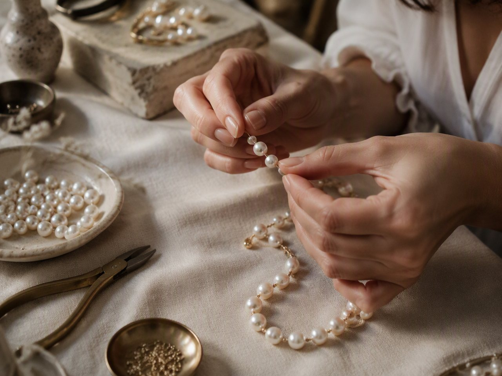
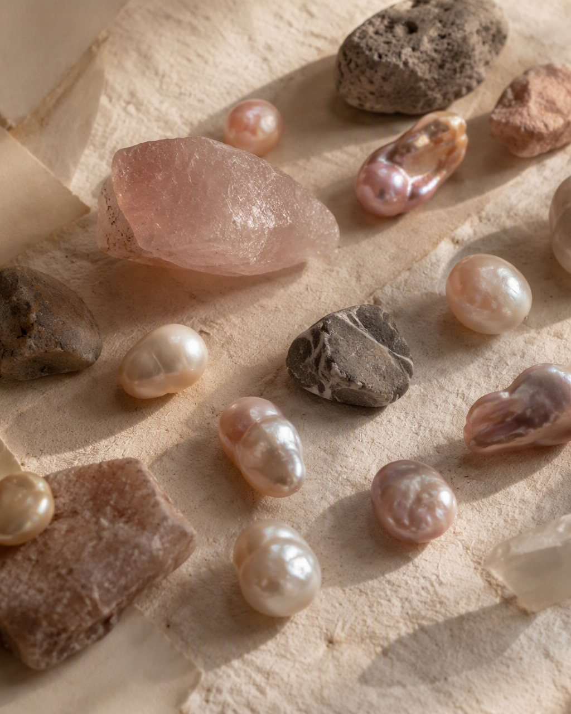

01
The Beginning
It started with a love for making.
Jhilik began quietly, at a small table, with pearls, stones, and the simple joy of making something by hand. What started as one woman's creative passion, stringing pearl bracelets and experimenting with texture and shape, slowly became the beginning of a brand.
Every piece is made slowly and with intention. No molds, no assembly lines; just patience, detail, and the belief that the things we wear closest should carry a little of the hands that made them.
Born from a passion for creating, Jhilik begins with jewelry and dreams beyond it.

